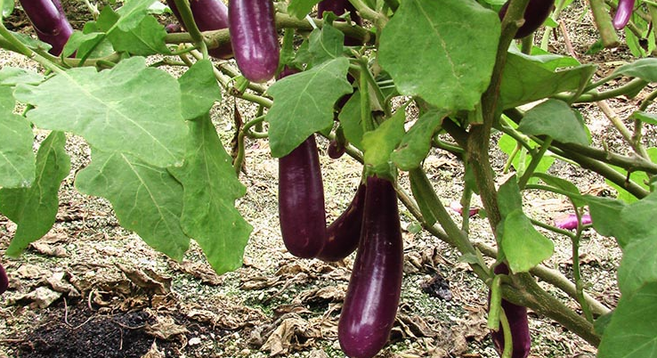

| Crop | Seed Requirement | Spacing | Time to get first harvest | Urea | TSP | MOP | Time of application |
|---|---|---|---|---|---|---|---|
| Carrot | 4kg/hac | 25cm*5cm | 85-100 days | - | 270 | - | 9WAP |
| Beet Root | 5-6kg/hac | Dry done 30cm*10cm | 70-80days | 165 | 270 | 125 | 4WAP |
| Cabbage | 200-250g/hac | 50cm*40cm | 90days | 85 | 165 | 75 | 9WAP |
| Bush Beans | 75kg/hac | 40cm*30cm | 45days | 110 | 275 | 65 | 3WAP |
| Pole Beans | 50kg/hac | 1.5m*1.5m | 60days | 110 | 270 | 75 | 9WAP |
| Snake Gourd | 4kg/hac | 1.5m*1.5m | 60-75days | 75 | 195 | 60 | 3WAP |
| Long Beans | Bush type-17-20kg/hac | 60-75cm*20cm | 60 days | 35 | 130 | 35 | 1WAP |
| Brinjal | 200-300g/hac | 90cm*60cm | 75 days | 75 | 325 | 85 | 6WAP |
| Okra | 4.5kg/hac | 90cm*60cm | 50-100 days | 50 | 195 | 25 | 15WAP |
| Tomato | 200-250g/hac | 90cm*50cm | 60-65 days | 65 | 325 | 65 | 9WAP |
ලංකා කැරට්
කෘෂිකර්ම දෙපාර්තමේන්තුව මඟින් නිර්දේශිත කැරට් ප්රභේදයක් වන අතර මෙම ප්රභේදයේ බීජ දේශීයව නිෂ්පාදනය කළ හැකියි. මාස 2 ½ - 3 දී අස්වනු ලබා ගත හැක.
අධික වර්ෂා කාලයේදී පවා හොඳින් වගා කළ හැක. පූර්ව අංගමාරයට ප්රතිරෝධී වේ.
කෝණාකාර හැඩයක් ඇති කැරට් මුල දිගින් සෙන්ටිමීටර් 12 - 15 පමණ වන අතර කහ පාටට හුරු තැඹිලි පැහැයක් ගනී.
කියත් පණුවා මූල ගැටිති වටපණුවන් පත්ර අංගමාරය
බීට්රූට් (Beetroot)
පැළ සිටුවා දින 70-90 දී අස්වනු නෙළාගත හැකිය. බීට් අලය බාහිරව රතු දම් පැහැතිවන අතර ඇතුලතින් තද රතු දම් පැහැති වේ. අලයේ මැද කොටස ලා රතු පාට වේ.
කියත් පණුවා දියමලන්කෑම සර්කස්පෝරා පත්ර පුල්ලි රෝගය අල කබොලු රෝගය
ගෝවා (Cabbage)
කොල පැහැති ගෙඩිය සාමාන්ය තද ගතියෙන් යුත් පැතලි රවුම් හැඩයෙන් යුක්ත වේ. දින 80-85 දී අස්වැන්න නෙලාගත හැක.
දියමලන් කෑම යටිපුස් රෝගය කළු කුණුවීම සුදු පුස් රෝගය
බෝංචි (Beans)
සෙන්ටිමීටර් 18-20 පමණ දිග කොළ පැහැති කරල් සහිත වැල් බෝංචි ප්රභේදයකි. පළමු අස්වැන්න දින 60-65 දී ලබා ගත හැකි අතර, අස්වනු වාර 6 - 8 ලබාගත හැකිය. එක් වැලක සාමාන්යයෙන් කරල් 46ක පමණ සංඛ්යාවක් හටගනී. බණ්ඩාරවෙල ප්රදේශයේ ගොවීන්ගේ fක්ෂ්ත්රවල සාමාන්යයෙන් හෙක්ටයාරයකට මෙට්රික් ටොන් 17-18 පමණ අස්වැන්නක් ලබාගත හැකිය. මෙම ප්රභේදය මලකඩ,ඇන්ත්රැක්නෝස් සහ බීජ පැළ කුඩා අවධියේදී වැළඳෙන මුල් කුණුවීමේ රෝග යට ඔරොත්තු ඳේ බීජ තද දම් පාටය.
කෘමි පාලනය බෝංචි මැස්සා කෘසර් (තයමෙතොක්සාම් 25% WS) සුදු පුස් රෝගය
පතෝල (snake gourd)
උද්භිද විද්යාත්මක නාම - ට්රයිකොසැන්තස් කියුකමෙරිනා (Trichosanthes cucumerina)
කුලය - කුකර්බිටේසි.
ඉල් මැස්සා
වම්බටු ( Brinjal)

තෙත් හා අතරමැදි කලාපයේදී බැක්ටීරියා හිටුමැරීමට පාත්රී වේ. මෙම ප්රභේදයේ ඵල තද දම් පාට දිලිසෙන
ස්වභාවයකින් හා දිගැටි හැඩයකින් යුතුය. පුෂ්ප, කඳ හා පත්ර නාරටි ද දම්පාටය. වැඩි වියලි දේශගුණයක් සහිත උතුරු ප්රදේශයට වඩාත් සුදුසුය. විභව අස්වැන්න හෙක්ටයාරයකට ටොන් 20-25 අතර වේ.
කරටි හා ගෙඩි විදින පණුවා කොල හකුලන දළඹුවා කෘසර් (තයමෙතොක්සාම් 25% WS) සුදු පුස් රෝගය
ආහාරයට ගනිමින් වැඬේ කරලේ වර්ධනය ඕනෑම අවස්ථාවකදී හානි සිදුකළ හැකිය. ඉල් මැස්සාගේ කීටයින් කරල තුළ සිදුකරන හානිය නිසා කරල් කුණු වී යයි. වැල් අවට පොළව රේක්කයකින් ඇවිස්සීමෙන් පිලා අවස්ථාව විනාශ කළ හැකිය. හානි වූ කරල් වගාවෙන් ඉවත් කර විනාශකර දමන්න. කුඩා අවධියේදීම කරල් තුනී පොලතීනයකින් හෝ කඩදාසි මඟින් ආවරණය කිරීමෙන් කරල් වලට හානි කිරීම පාලනය කර ගත හැක. (කරවිල වගාවේ ඉල් මැස්සා පාලනය පිළිබඳ බලන්න.)
මීට අමතරව අවුලකපෝරා කුරුමිණියන්, හබල්පාද මකුණන් හා එපිලැක්නා කුරුමිණියන් නිසාද වගාවට හානි සිදුවිය හැක. මූල ගැටිති වටපණු හානිය නිසා ශාකයේ වර්ධනයට අවශ්ය පෝෂක හා ජලය ලබා ගැනීම අඩු වේ. මෙහිදී ශාක මැලවුණු ස්වභාවයක් පෙන්වීම, පත්ර කුඩා වීම හා වර්ධනය බාල වී කුරු ශාක ඇති වීම මඟින් හානිය හඳුනාගත හැකියි. අඛණ්ඩව කාබනික පොහොර යෙදීම මඟින් පසේ තෙතමනය දියුණු කර එහි ඇති හිතකර ජීව ගහණය වැඩි කිරීම තුළින් වටපණු හානිය අවම කරගත හැකිය. මීට අමතරව පතෝල වගාවේ, ගඩු මැස්සාගේ
හානිය සුලභව දක්නට ලැබේ. ගඩු සෑදෙන මුල් අවස්ථාවේම එම රිකිලි කඩා ඉවත් කරන්න. හානිය උග්ර නම් පමණක් ප්රොපෙනොෆොස් කෘමිනාශකය දින 14 කට වරක් යොදන්න.
බටු ක්ෂේත්රය වටා සජීවී හෝ අජීවී බාධකයක් (බඩඉරිඟු, සෝගම් හෝ කෘමි ප්රතිරෝධී දැලක්) මීටර් 2 පමණ උසට යොදා ගැනීම)
වගාකර ඇති ශාකවල කරටිවල මෙම හානිය පළමුවෙන්ම දක්නට ලැබුනු විට එම කරටි කොටස් හානි කළ ස්ථානයට පහලින් කපා ශාකයෙන් ඉවත් කර විනාශ කර දමන්න. සතියකට වරක් වගාව පරීක්ෂා කරන්න.
50% මල් හටගත් අවස්ථාවේදී සුදුසු කෘමි නාශකයක් ඉසීමෙන් මෙම හානිය පාලනයකර ගත හැකිය.
මල් පිපීමත් සමඟ ස්පිනොසාර්ඩ් 450g/lEc (ට්රේසර) මිලි ලීටර් 3 ක් වතුර ලීටර් 10 යන අනුපාතයට මිශ්රකර යෙදීම හෝ ක්රොමෆෙනොසයිඩ් 50g/lEc (මැට්රික්) මිලි ලීටර් 20 ක් වතුර ලීටර් 10 යන අනුපාතයට මිශ්රකර යෙදීම හෝ පලුබෙන්ඩියාමයිඩ් 24%/ WG (බෙල්ට්) ග්රෑම් 3 ක් ජලය ලීටර් 10 ක දියකර යෙදීම හෝ ක්ලොරන්ත්රැනිලිප්රෝල් 20% SC (කොරුජන්) මිලි ලීටර් 2 ජලය ලීටර් 10 ක දියකර යෙදීම.
අස්වනු නෙළීමේ දී හානි කර ඇති ගෙඩි සංඛ්යාව පිළිබඳ අවබෝධයක් ලබා ගැනීම හා හානිකළ ගෙඩි ගණන 5% වඩා වැඩි නම් පමණක් නිර්දේශිත කෘමිනාශකයක් යෙදීම. පෙර අස්වනු කාලය ගැන සැළකිලිමත් වීම හා එකම කෘමිනාශකය දිගින් දිගටම භාවිතා නොකිරීම.
අස්වනු නෙලන අවස්ථාවේ කෘමිනාශක යොදන විට පෙර අස්වනු කාලය ගැන සැළකිලිමත් වීම.